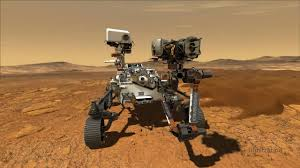

UNSA Inaugura Centro de Investigación en Inteligencia Artificial
La Universidad Nacional de San Agustín ha inaugurado el primer centro de investigación especializado en IA del sur del Perú. Con una inversión de 2 millones de dólares, el centro contará con supercomputadoras y laboratorios de última generación.
El proyecto busca formar a la próxima generación de especialistas en machine learning y deep learning, con enfoque en aplicaciones para la industria minera y agrícola de la región.
Nuevo edificio del Centro de Investigación en IA - UNSA
Startup Arequipeña Desarrolla App para Optimización del Agua
"AquaSmart", una startup local, ha creado una aplicación que utiliza sensores IoT y algoritmos predictivos para optimizar el uso del agua en la agricultura. La solución ha reducido el consumo de agua en un 40% en pruebas piloto.
La startup acaba de recibir fondos de inversores internacionales y planea expandirse a otros países de Latinoamérica.
Interfaz de la aplicación AquaSmart en tablet
🌍 Noticias Internacionales
NASA Anuncia Misión Tripulada a Marte para 2030
La NASA ha confirmado oficialmente que enviará la primera misión tripulada a Marte en 2030. La misión "Artemis III" utilizará la nueva nave Orion y permanecerá 30 días en la superficie marciana.
Este histórico anuncio marca el comienzo de una nueva era en la exploración espacial humana más allá de la Luna.

Representación artística de la base marciana - NASA
Google Anuncia Avance en Computación Cuántica Libre de Errores
Google Quantum AI ha anunciado un avance fundamental en corrección de errores cuánticos, logrando por primera vez reducir los errores al aumentar el número de qubits.
Este descubrimiento acerca la computación cuántica práctica y podría revolucionar campos como la criptografía, descubrimiento de medicamentos y ciencia de materiales.
Nuevo procesador cuántico de Google - Sycamore 2.0